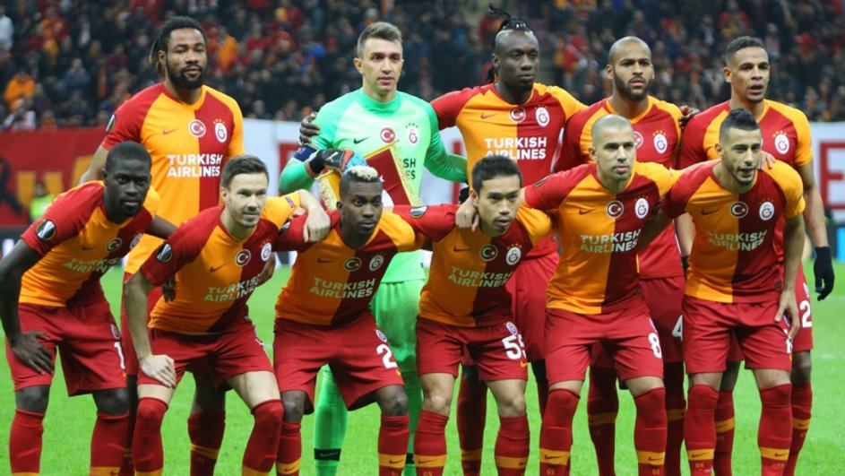
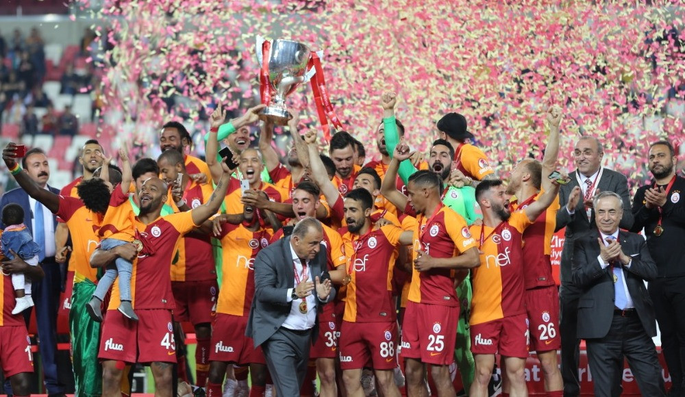
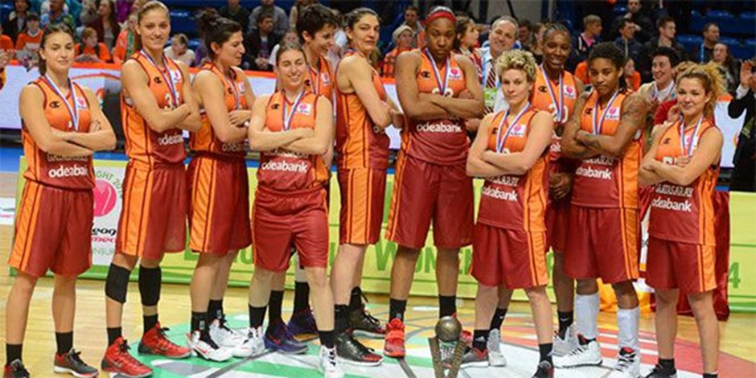
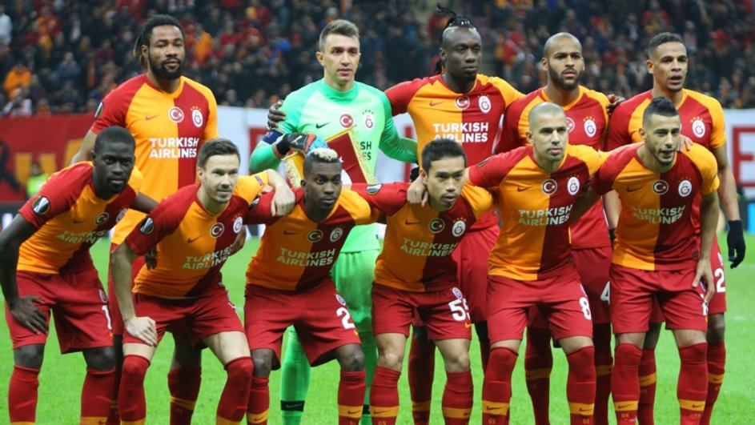
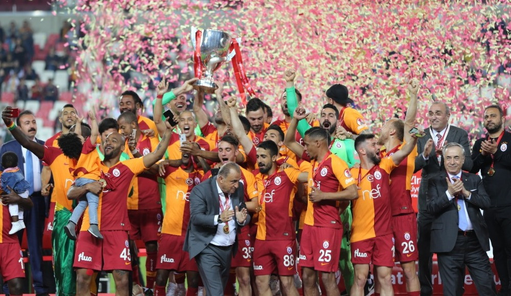
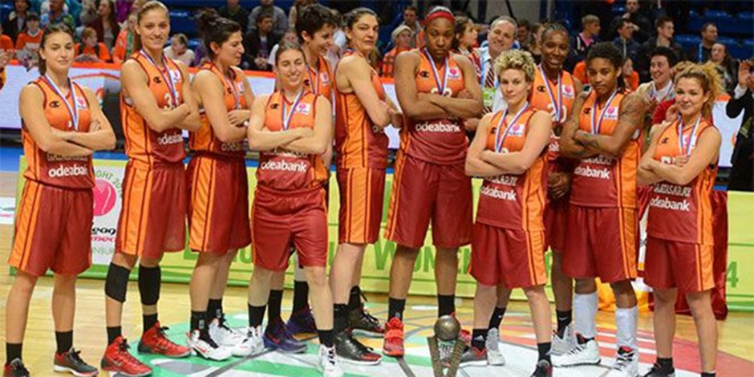

GALATA SARAY
Galatasaray Spor Kulübü merkezi İstanbul'da olan, özellikle futbol takımı ile tanınan spor kulübü. Türkiye'nin en çok taraftarı olan, en başarılı spor kulüplerinden birisidir.
1905 yılında Ali Sami Yen ve arkadaşları tarafından, öğrenci oldukları Galatasaray Lisesinde kurulan kulüp, futbol branşında 22 kez Lig şampiyonu olmuş, 18 kez Türkiye Kupası ve 16 kez de Türkiye Süper Kupası kazanmış; 2000 yılında da UEFA Kupası'nı ve UEFA Süper Kupası'nı kazanmıştır. Ayrıca futbol liglerinde üçüncü ve dördüncü yıldızı takan ilk takımdır.
Galatasaray SK , güncel olarak futbol (erkekler ve kadınlar), basketbol (erkekler ve kadınlar) ve voleybol (erkekler ve kadınlar) dallarında en üst lig düzeyinde temsil edilmektedir.
2004 yılında Polonya'nın Poznań şehrinde gerçekleşen 23 Yaş Altı Dünya Kürek Şampiyonası'nda yarışan İhsan Emre Vural ve Ahmet Yumrukaya ikilisi, hafif kilo iki tek kategorisinde şampiyon olarak, Türkiye'nin kürekteki ilk şampiyonluğunu kazandırdılar.
2008 yılında Galatasaray (tekerlekli sandalye basketbol takımı), IWBF Şampiyonlar Ligi finalinde Alman rakibi RSV Lahn-Dill'i 63-51 yenerek şampiyon oldu. Daha sonra Galatasaray , Japonya'da düzenlenen Kıtalararası Kitakyushu Kupası'nda Kanada'nın British Columbia takımını 77-62 mağlup ederek, namağlup şekilde şampiyon oldu.[4] 2012 Avrupa Şampiyon Kulüpler Kupası final maçında Almanya'nın RSV Lahn-Dill takımıyla karşı karşıya geldi. Mücadeleyi 65-79 kaybederek Avrupa ikincisi oldu.
2009 yılında ise Galatasaray (kadın basketbol takımı), Eurocup finalinde İtalya'nın Cras Basket Taranto takımını 82-61 yenerek Avrupa Şampiyonu unvanını aldı.
2013-2014 sezonu Euroleague Women 8'li finalleri için Rusya'nın Ekaterinburg şehrindeki turnuvada grubunu 2. sırada bitiren Galatasaray Odeabank yarı finalde ev sahibi UGMK Yekaterinburg'u 77-70 yenerek tarihinde ilk kez finale kalmış ve finalde ezeli rakibi Fenerbahçe'yi 69-58 yenerek Avrupa'nın 1 numaralı kupası olan Euroleague Women'ı müzesine götürmüştür.
2013-2014 sezonunda Türk spor tarihinde bir ilki gerçekleştiren Galatasaray Spor Kulübü, yarıştığı futbol, erkek basketbol, kadın basketbol, tekerlekli sandalye basketbol, erkek voleybol ve kadın voleybol branşlarında mücadele ettikleri branşların tamamında aynı sezon içerisinde kendi branşlarının Şampiyonlar Liglerinde mücadele ederek ulaşılması zor bir başarıya imza atmıştır.
2015-2016 yılında ise Galatasaray , EuroCup finalinde Fransa'nın Strasbourg IG takımını 78-67 yenerek Avrupa Şampiyonu unvanını aldı. 2017-2018 yılında da Galatasaray (kadın basketbol takımı) yine bir diğer İtalyan temsilcisi Reyer Venezia'yı finalde geçerek Avrupa'nın 2. büyük kupası Eurocup'ı tarihinde 2. kez kazanmıştır.